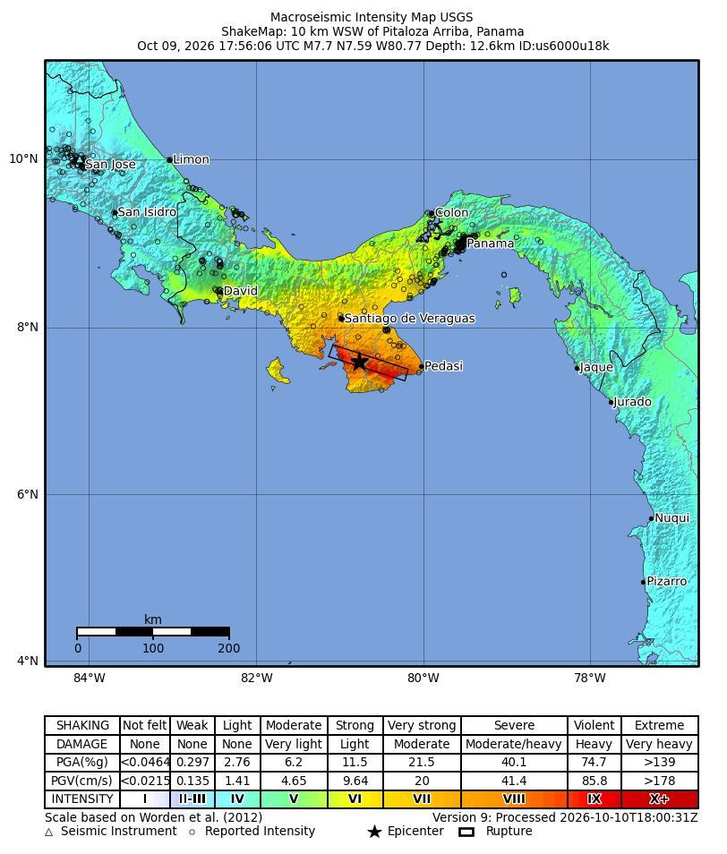
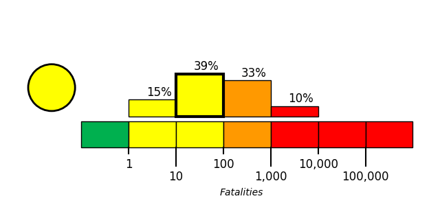
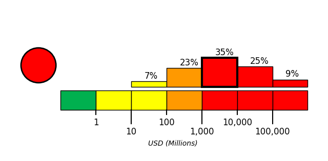

On October 9, 2026, at approximately 12:56 local time (America/Panama; 2026-10-09 17:56 UTC), a magnitude 7.7 earthquake, with a reported depth of 12.647 km, occurred 12 km WSW of Pitaloza Arriba, Panama. The USGS epicenter was at 7.5868° latitude and -80.769° longitude.
Extensive diversity and complexity of tectonic regimes characterizes the perimeter of the Caribbean plate, involving no fewer than four major plates (North America, South America, Nazca, and Cocos). Inclined zones of deep earthquakes (Wadati-Benioff zones), ocean trenches, and arcs of volcanoes clearly indicate subduction of oceanic lithosphere along the Central American and Atlantic Ocean margins of the Caribbean plate, while crustal seismicity in Guatemala, northern Venezuela, and the Cayman Ridge and Cayman Trench indicate transform fault and pull-apart basin tectonics.
Along the northern margin of the Caribbean plate, the North America plate moves westwards with respect to the Caribbean plate at a velocity of approximately 20 mm/yr. Motion is accommodated along several major transform faults that extend eastward from Isla de Roatan to Haiti, including the Swan Island Fault and the Oriente Fault. These faults represent the southern and northern boundaries of the Cayman Trench. Further east, from the Dominican Republic to the Island of Barbuda, relative motion between the North America plate and the Caribbean plate becomes increasingly complex and is partially accommodated by nearly arc-parallel subduction of the North America plate beneath the Caribbean plate. This results in the formation of the deep Puerto Rico Trench and a zone of intermediate focus earthquakes (70-300 km depth) within the subducted slab. Although the Puerto Rico subduction zone is thought to be capable of generating a megathrust earthquake, there have been no such events in the past century. The last probable interplate (thrust fault) event here occurred on May 2, 1787 and was widely felt throughout the island with documented destruction across the entire northern coast, including Arecibo and San Juan. Since 1900, the two largest earthquakes to occur in this region were the August 4, 1946 M8.0 Samana earthquake in northeastern Hispaniola and the July 29, 1943 M7.6 Mona Passage earthquake, both of which were shallow thrust fault earthquakes. A significant portion of the motion between the North America plate and the Caribbean plate in this region is accommodated by a series of left-lateral strike-slip faults that bisect the island of Hispaniola, notably the Septentrional Fault in the north and the Enriquillo-Plantain Garden Fault in the south. Activity adjacent to the Enriquillo-Plantain Garden Fault system is best documented by the devastating January 12, 2010 M7.0 Haiti strike-slip earthquake, its associated aftershocks and a comparable earthquake in 1770.
Moving east and south, the plate boundary curves around Puerto Rico and the northern Lesser Antilles where the plate motion vector of the Caribbean plate relative to the North and South America plates is less oblique, resulting in active island-arc tectonics. Here, the North and South America plates subduct towards the west beneath the Caribbean plate along the Lesser Antilles Trench at rates of approximately 20 mm/yr. As a result of this subduction, there exists both intermediate focus earthquakes within the subducted plates and a chain of active volcanoes along the island arc. Although the Lesser Antilles is considered one of the most seismically active regions in the Caribbean, few of these events have been greater than M7.0 over the past century. The island of Guadeloupe was the site of one of the largest megathrust earthquakes to occur in this region on February 8, 1843, with a suggested magnitude greater than 8.0. The largest recent intermediate-depth earthquake to occur along the Lesser Antilles arc was the November 29, 2007 M7.4 Martinique earthquake northwest of Fort-De-France.
The southern Caribbean plate boundary with the South America plate strikes east-west across Trinidad and western Venezuela at a relative rate of approximately 20 mm/yr. This boundary is characterized by major transform faults, including the Central Range Fault and the Boconó-San Sebastian-El Pilar Faults, and shallow seismicity. Since 1900, the largest earthquakes to occur in this region were the October 29, 1900 M7.7 Caracas earthquake, and the July 29, 1967 M6.5 earthquake near this same region. Further to the west, a broad zone of compressive deformation trends southwestward across western Venezuela and central Colombia. The plate boundary is not well defined across northwestern South America, but deformation transitions from being dominated by Caribbean/South America convergence in the east to Nazca/South America convergence in the west. The transition zone between subduction on the eastern and western margins of the Caribbean plate is characterized by diffuse seismicity involving low- to intermediate-magnitude (M<6.0) earthquakes of shallow to intermediate depth.
The plate boundary offshore of Colombia is also characterized by convergence, where the Nazca plate subducts beneath South America towards the east at a rate of approximately 65 mm/yr. The January 31, 1906 M8.5 earthquake occurred on the shallowly dipping megathrust interface of this plate boundary segment. Along the western coast of Central America, the Cocos plate subducts towards the east beneath the Caribbean plate at the Middle America Trench. Convergence rates vary between 72-81 mm/yr, decreasing towards the north. This subduction results in relatively high rates of seismicity and a chain of numerous active volcanoes; intermediate-focus earthquakes occur within the subducted Cocos plate to depths of nearly 300 km. Since 1900, there have been many moderately sized intermediate-depth earthquakes in this region, including the September 7, 1915 M7.4 El Salvador and the October 5, 1950 M7.8 Costa Rica events.
The boundary between the Cocos and Nazca plates is characterized by a series of north-south trending transform faults and east-west trending spreading centers. The largest and most seismically active of these transform boundaries is the Panama Fracture Zone. The Panama Fracture Zone terminates in the south at the Galapagos rift zone and in the north at the Middle America trench, where it forms part of the Cocos-Nazca-Caribbean triple junction. Earthquakes along the Panama Fracture Zone are generally shallow, low- to intermediate in magnitude (M<7.2) and are characteristically right-lateral strike-slip faulting earthquakes. Since 1900, the largest earthquake to occur along the Panama Fracture Zone was the July 26, 1962 M7.2 earthquake.
References for the Panama Fracture Zone: Molnar, P., and Sykes, L. R., 1969, Tectonics of the Caribbean and Middle America Regions from Focal Mechanisms and Seismicity: Geological Society of America Bulletin, v. 80, p. 1639-1684.

Building damage was concentrated in central Panama, including the provinces of Veraguas, Herrera and Los Santos [1][5][6]. In Penonomé, Coclé Province, reports described damage to the Cathedral of San Juan Bautista, a government building and Hotel Dos Continentes; images and videos also showed a historic building’s tower or spire collapsed, residential-apartment balconies collapsed, and nearby buildings damaged or collapsed [1][2][8][9][10][11]. A hotel was reported partially collapsed, with vehicles crushed beneath it [13][14]. Damage to buildings was also reported in Soná, Veraguas Province [4][15]. Preliminary assessment by Panama’s National Civil Protection System counted more than 400 damaged buildings across nine provinces, including 142 homes, 188 schools and 20 health care facilities [12]. Reports differed on impacts in Panama City: initial assessments and official statements said no damage or no significant damage had been reported there, while other reports described a damaged building and minor hotel damage [1][3][5][7][4].
Roads were damaged by the earthquake, with reports of cracking and collapse in southern and central Panama, including Herrera, Veraguas and Los Santos [16][17]. Some communities were isolated or cut off from road access by landslides, blocked roads or other road damage. Bridges were also reported damaged [18][19]. The Panama Canal continued operating normally, and ship passage was not disrupted. The Panama Canal Authority activated emergency procedures and technical teams inspected facilities for possible damage [3][20]. Tocumen International Airport temporarily suspended operations after the earthquake as a precaution and activated evacuation plans; it resumed operations on Friday afternoon [21][22][23]. Services on Metro Lines 1 and 2 were suspended, with inspections reported [24][25].
The earthquakes prompted widespread precautionary evacuations. In Panama City, residents left buildings and gathered in streets, squares and parks; a Metro station and hospitals were also evacuated, including the maternity ward at Santo Tomas Hospital, where babies were taken outside [14][4][26][27][3][28]. Schools were evacuated, and the Ministry of Education suspended afternoon classes nationwide; later reporting said classes would be suspended on Monday and Tuesday [29][4][30]. As of October 10, reporting described 27 people injured, with no deaths reported at that time [31][32]. The government mobilized emergency personnel and resources, while civil protection officials assessed damage and monitored reports from affected areas [33][34][15]. Damage was reported as concentrated in Veraguas, Herrera and Los Santos, with homes, roads, schools and other buildings affected; some communities were isolated by transport disruptions [4][35]. Residents near the epicenter began cleanup on Saturday, while affected neighbors reportedly remained in squares amid continuing aftershocks [36][30]. Drinking water and basic food supplies were arranged for affected residents, including water provision in Playa Venao, where infrastructure damage caused shortages [37][38]. A state of emergency was declared on October 10 [32].
USGS PAGER tool estimated the fatalities to be in the yellow alert level, which is most likely between 10 and 100 with a probability of 39%.
USGS PAGER tool estimated the economic loss to be in the red alert level, which is most likely between 1,000 and 10,000 million dollars with a probability of 35%.

